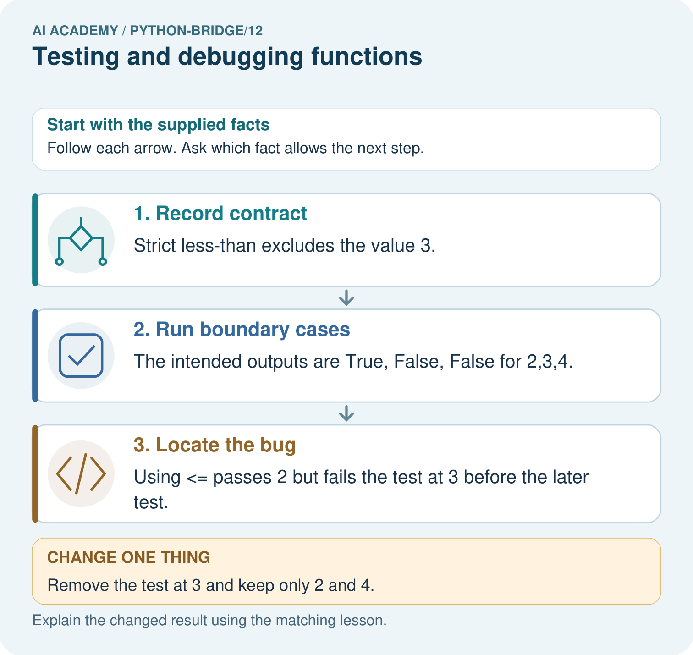
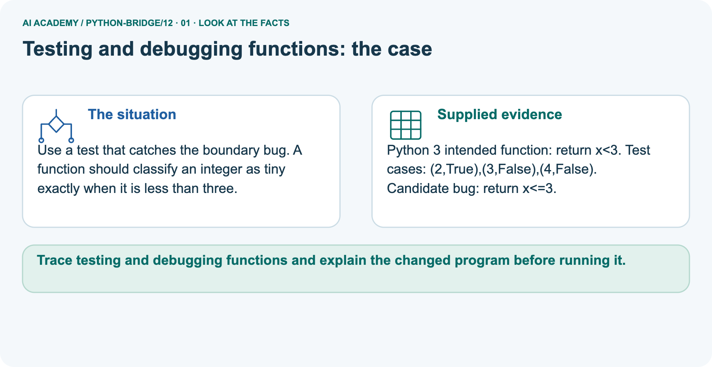
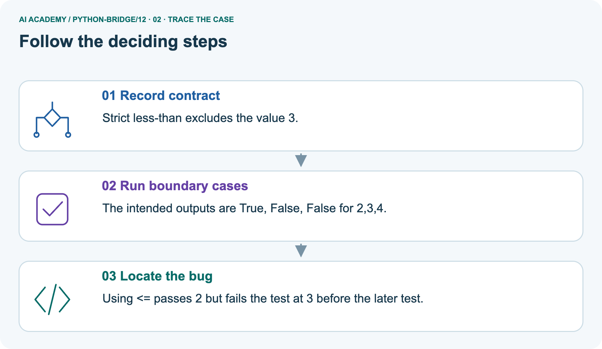
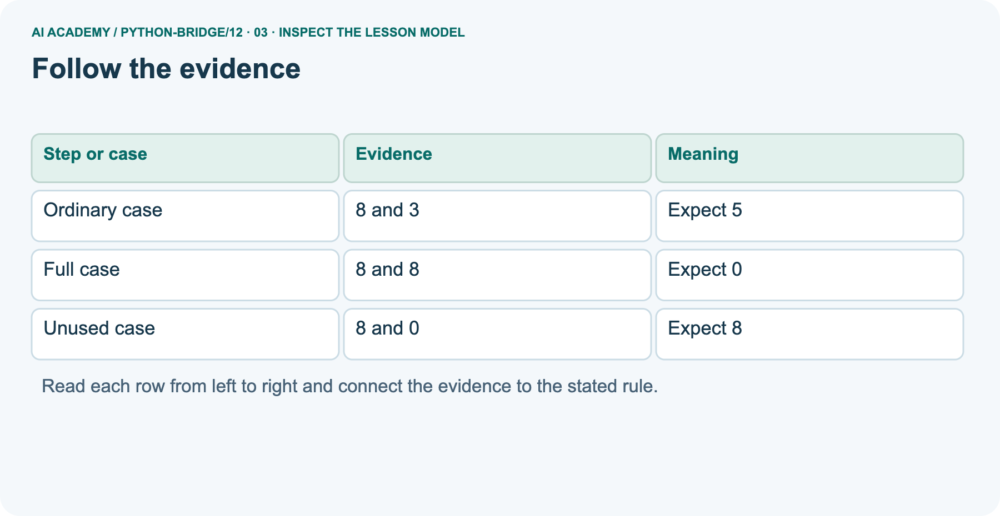
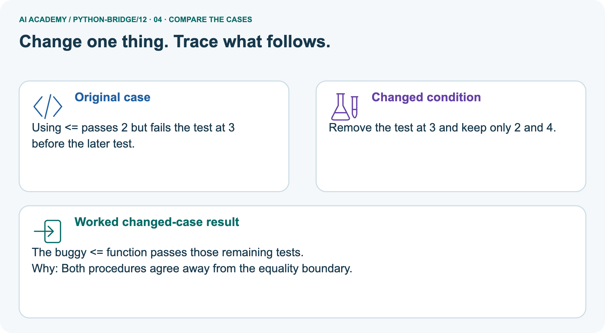
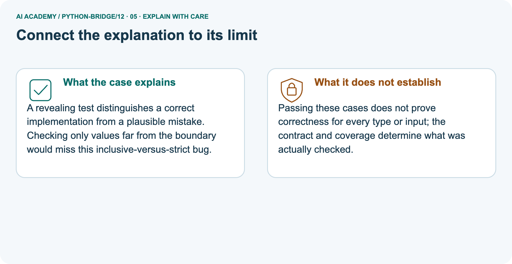
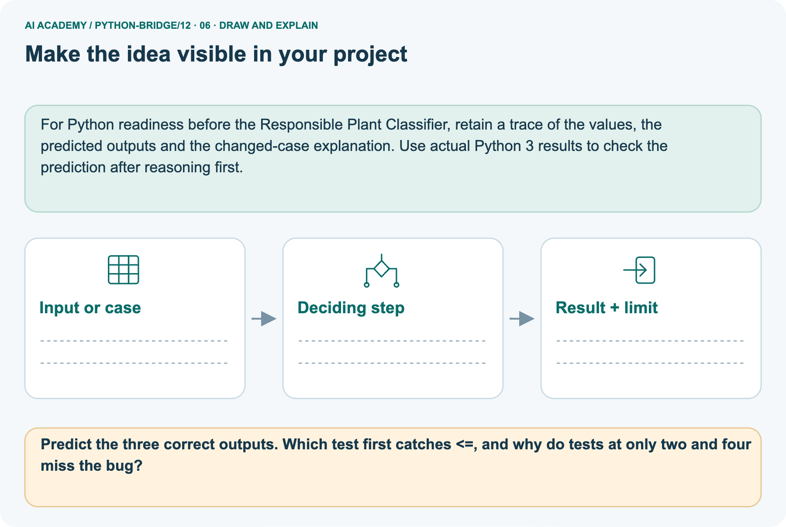

AI Academy · Python readiness bridge · Workbook
Testing and debugging functions
Learn to understand, design, build, test and explain AI systems responsibly.
Project: Python readiness portfolio
Workbook · 1 of 15
Recall and choose your starting point
Record your starting explanation for Testing and debugging functions before opening notes. Show any later correction separately.
Try the recall before opening notes. Then use a different colour or a labelled second line to correct your explanation.
Reading structured data
Without opening the old lesson, explain one key idea from Reading structured data. Give an example and a mistake that the idea helps you avoid.
Return values and local state
Without opening the old lesson, explain one key idea from Return values and local state. Give an example and a mistake that the idea helps you avoid.
Loops and trace tables
Without opening the old lesson, explain one key idea from Loops and trace tables. Give an example and a mistake that the idea helps you avoid.
Workbook · 2 of 15
Practise with fading help
Complete the supported Testing and debugging functions trace and record the first step you can explain without help.
Use W2: Find a revealing case for Testing and debugging functions. Record the answer once; the lesson and workbook refer to the same attempt.
| Given inputs | Procedure I chose | Middle steps | Result and check |
|---|---|---|---|
Workbook · 3 of 15
Individual reasoning check
Check the proposed Testing and debugging functions explanation against the supplied facts before discussing it.
Use the worked case for Testing and debugging functions. Proposed explanation: “A successful run proves the conclusion”. Decide whether this explanation is supported.
Point to the step or supplied fact that decides; explain your repair if needed.
Workbook · 4 of 15
Independent transfer case
Write one first attempt at the reserved independent case before feedback. Repeated copies of that case refer to the same recorded attempt.
Independent case: Use boundary tests to reveal a function defect
Predict the output. If the function mistakenly uses x<=10, identify the first failing assertion and whether the final print happens. State the repair and which earlier tests must be rerun.
Do these cases prove all input types are handled?
def below_limit(x):
return x < 10
assert below_limit(9) is True
assert below_limit(10) is False
assert below_limit(11) is False
print("three checks passed")
Attempt this case before feedback. Record any help. Earlier examples below are further practice; a case already practised with feedback cannot establish fresh transfer.
Workbook · 5 of 15
W1 Write expectations
Write expectations. Apply the supplied Testing and debugging functions facts and keep your reasoning.
Give expected results for remaining(6, 2), remaining(6, 6) and remaining(6, 0).
Workbook · 6 of 15
W2 Find a revealing case
Find a revealing case. Apply the supplied Testing and debugging functions facts and keep your reasoning.
Where to find the supplied example
Reference for this exercise: open this week’s student lesson, “Testing and debugging functions”, at “Find and repair a mistake”. Use the original worked values or code named in the question; the later pictorial case is a separate example. Keep this reference beside your workbook while practising.
A faulty function always returns 4. Which of your three cases pass and fail?
Workbook · 7 of 15
W3 Repair and retest
Repair and retest. Apply the supplied Testing and debugging functions facts and keep your reasoning.
Where to find the supplied example
Reference for this exercise: open this week’s student lesson, “Testing and debugging functions”, at “Find and repair a mistake”. Use the original worked values or code named in the question; the later pictorial case is a separate example. Keep this reference beside your workbook while practising.
A faulty function adds capacity and used. For (6, 2), state actual and expected. Repair it and name a regression case.
Workbook · 8 of 15
W4 Test a new function independently
Attempt before feedback. If this repeats the selected independent case, reuse that first attempt; otherwise keep a separate record. Test a new function independently. Apply the supplied Testing and debugging functions facts and keep your reasoning.
Define stock(packs, loose) to return packs * 4 + loose. Create expected tests for (2, 3), (0, 3), (2, 0), then show which detects a faulty packs + loose body.
Workbook · 9 of 15
W5 Limit the conclusion
Limit the conclusion. Apply the supplied Testing and debugging functions facts and keep your reasoning.
All three stock tests pass. Does that prove correct handling of negative counts?
Workbook · 10 of 15
Project checkpoint and reflection
Connect Testing and debugging functions to Python readiness portfolio, identify a limit and choose the next useful test.
Add a labelled testing and debugging functions evidence sheet to Python readiness portfolio. Show how you can design revealing tests for a function.
Use the supplied fictional case and keep its inputs, intermediate steps, calculation or prediction, and limitation. Connect this record to last week’s record; a matching answer without a trace is insufficient.
Workbook · 11 of 15
Feedback, return check and learning record
Record the first repaired step and a different case to revisit after a delay.
| Evidence | My record |
|---|---|
| Worked alone / hint / model | |
| First step I repaired and why | |
| New case checked later; date and result | |
| What I can now explain without notes | |
| One remaining question |
Revisit this idea with your teacher after a delay. Familiarity is different from explaining and using it on a changed case.
Workbook · 12 of 15
Pictorial case practice: Testing and debugging functions
Use a test that catches the boundary bug. A function should classify an integer as tiny exactly when it is less than three. Explain the labelled step before checking the changed condition.
Use a test that catches the boundary bug. A function should classify an integer as tiny exactly when it is less than three.
Python 3 intended function: return x<3. Test cases: (2,True),(3,False),(4,False). Candidate bug: return x<=3.

Predict the three correct outputs. Which test first catches <=, and why do tests at only two and four miss the bug?
Record the help used
Support used: alone / hint / worked example. This record is practice evidence.
Project connection: For Python readiness before the Responsible Plant Classifier, retain a trace of the values, the predicted outputs and the changed-case explanation.
Use actual Python 3 results to check the prediction after reasoning first.
Workbook · 13 of 15
Project portfolio milestone
Keep this week’s input, deciding step, result and limit together in the Python readiness portfolio record.
Project: Python readiness portfolio
Current milestone: Python readiness portfolio. Keep runnable code, predictions, actual outputs, one repaired error and an explanation of a function on changed inputs.
For Python readiness before the Responsible Plant Classifier, retain a trace of the values, the predicted outputs and the changed-case explanation. Use actual Python 3 results to check the prediction after reasoning first.
| Evidence to keep | My record |
|---|---|
| This week’s input and deciding step | |
| Prediction and actual result (or labelled paper trace) | |
| One change since the previous checkpoint and why | |
| One error or limit and the next test |
Workbook · 14 of 15
Supported practice and learning evidence
Try the supported questions before comparing with hints and feedback. Record what you repaired and the evidence you retained.
Use this supported practice once, in the browser or on paper. Keep the reserved independent assessment for a separate first attempt before teacher feedback.
Use a test that catches the boundary bug. A function should classify an integer as tiny exactly when it is less than three.
Practice 1: explain the deciding evidence
Which labelled step matches this detail? Using <= passes 2 but fails the test at 3 before the later test.
1. Locate the bug
2. Record contract
3. Run boundary cases
Hint · try first
Hint if needed: Read the steps in the pictorial case. Match the supplied detail to the stage that performs or records it.
Feedback · compare after trying
After your attempt, compare with the supported explanation: Locate the bug Using <= passes 2 but fails the test at 3 before the later test. A revealing test distinguishes a correct implementation from a plausible mistake.
Checking only values far from the boundary would miss this inclusive-versus-strict bug.
Practice 2: explain the deciding evidence
Changed case · predict first
Changed-case practice: Remove the test at 3 and keep only 2 and 4. Which conclusion is supported by the supplied facts?
1. The buggy <= function passes those remaining tests.
2. This one example guarantees correct results for every future input.
3. We can decide the result without examining the changed input or the procedure.
Hint · try first
Hint if needed: Use the changed condition and the deciding step in the pictorial trace. The answer must say what follows from those facts.
Feedback · compare after trying
After your attempt, compare with the supported explanation: The buggy <= function passes those remaining tests. Both procedures agree away from the equality boundary.
Repair a missing building block
Review Reading structured data (python-bridge/11). Goal: Process a list of records consistently. Short practice: Circle the included rows, calculate the sum and mean, and state coverage.
Repeat after adding the fourth row with count four.. Return to this week and explain what you changed.
Review Return values and local state (python-bridge/9). Goal: Use a returned value in a later calculation. Short practice: Trace the two returned values and explain why first stays seven.
What happens if the caller tries to print result directly?. Return to this week and explain what you changed.
Review Loops and trace tables (python-bridge/6). Goal: Trace variable values before and after each loop iteration. Short practice: List the four visited values and their running totals.
Explain why 5 is absent and what prints for range(1,1).. Return to this week and explain what you changed.
Predict, run and debug
The browser lab lets you edit the supported Python examples already included in this lesson. Predict first, run, inspect the actual output or error, change one input, then run again.
Keep code, predictions, actual results and a reasoned revision together. On paper, label your result as a trace rather than an execution.
Keep your completed work
Use Download completed work in the hosted lesson to export your answers, reflections, practice feedback and code-run evidence. Open the HTML copy to read or print it.
Drafts stay in this browser when storage is available; clear drafts on a shared device.
Workbook · 15 of 15
Visual concept journey
Explain each Testing and debugging functions picture from its labels, then record a relevant limit.
01. Testing and debugging functions: the case

Use a test that catches the boundary bug. A function should classify an integer as tiny exactly when it is less than three. Supplied facts: Python 3 intended function: return x<3. Test cases: (2,True),(3,False),(4,False).
Candidate bug: return x<=3.
Point to the given fact that matters most. Explain why it matters.
02. Follow the deciding steps

Record contract: Strict less-than excludes the value 3. → Run boundary cases: The intended outputs are True, False, False for 2,3,4. → Locate the bug: Using <= passes 2 but fails the test at 3 before the later test.
Point to each numbered stage and explain which recorded input it uses.
03. Follow the evidence

Follow the evidence. Ordinary case | 8 and 3 | Expect 5. Full case | 8 and 8 | Expect 0. Unused case | 8 and 0 | Expect 8
Read the labels and values. Explain the relationship the model shows.
04. Change one thing. Trace what follows.

Original case: Using <= passes 2 but fails the test at 3 before the later test. Changed condition: Remove the test at 3 and keep only 2 and 4. Expected result: The buggy <= function passes those remaining tests.
Reason: Both procedures agree away from the equality boundary.
Predict before checking the worked changed-case result. Name what changed and what the supplied facts allow you to conclude.
05. Connect the explanation to its limit

A revealing test distinguishes a correct implementation from a plausible mistake. Checking only values far from the boundary would miss this inclusive-versus-strict bug.
Limit: Passing these cases does not prove correctness for every type or input; the contract and coverage determine what was actually checked.
Explain the case, then point to a limit on the claim.
06. Make the idea visible in your project

For Python readiness before the Responsible Plant Classifier, retain a trace of the values, the predicted outputs and the changed-case explanation. Use actual Python 3 results to check the prediction after reasoning first.
Draw your input, deciding step, result and limit. Supported question: Predict the three correct outputs. Which test first catches <=, and why do tests at only two and four miss the bug?
Draw your project trace and justify the deciding step using evidence.